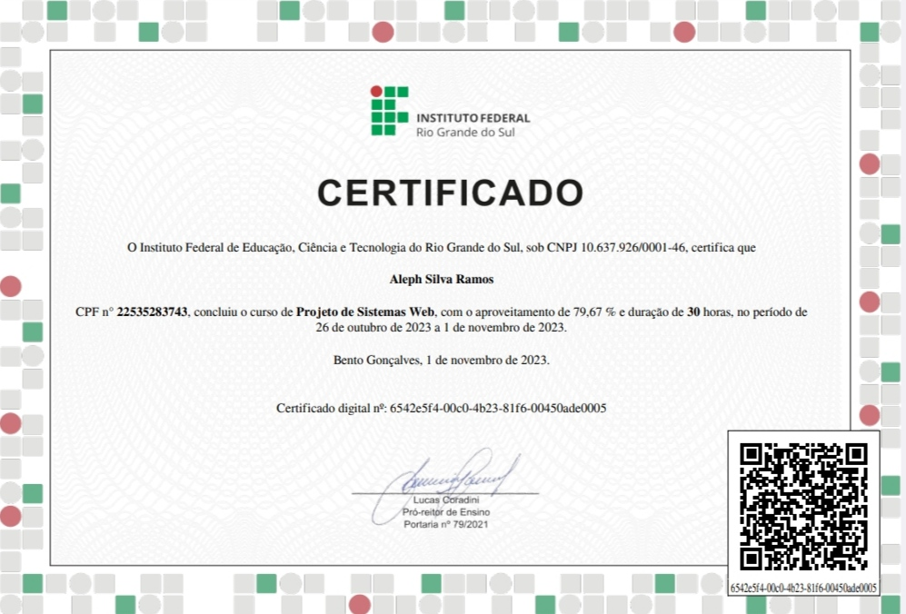
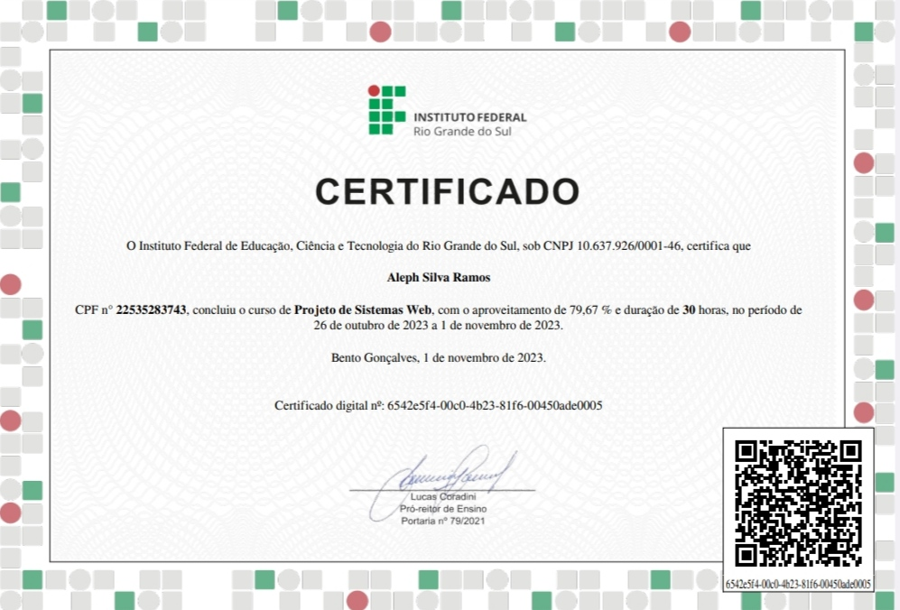
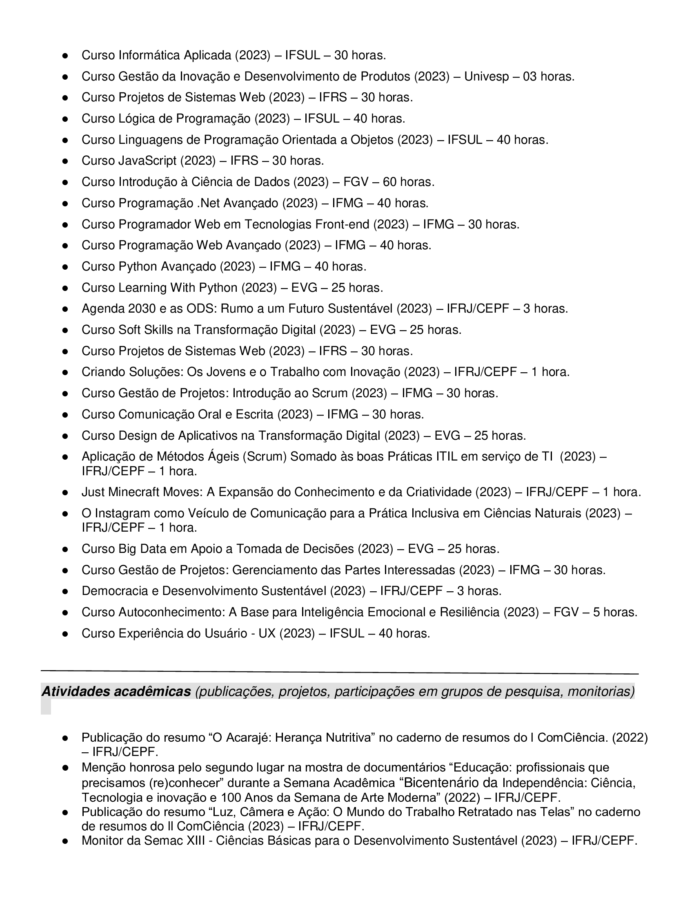
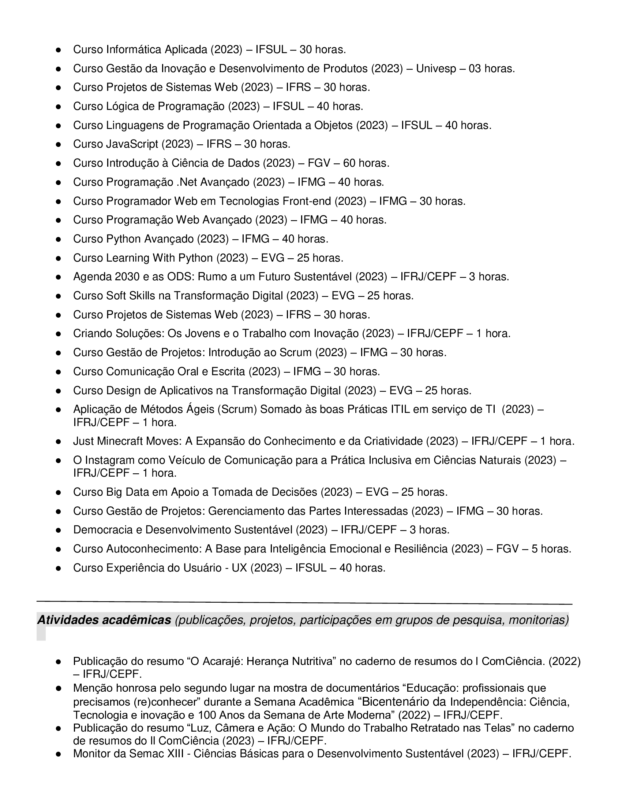

Design


novidades em breve...
Durante o período da pandemia, desenvolvi um profundo apreço pela prática da criação artística, explorando tanto o desenho digital quanto a expressão manual em papel. A dedicação a esse hobby permitiu um significativo aprimoramento do meu potencial criativo.
No contexto da criatividade, ao me engajar na concepção de designs e, inclusive, no desenvolvimento de websites, desenvolvi a capacidade de empregar abordagens inovadoras. Essa jornada me proporcionou a oportunidade de personalizar cada projeto de maneira autêntica e totalmente autoral, conferindo-lhes uma camada única de originalidade e distinção. Através desse processo, pude cultivar uma expressão criativa que vai além dos simples parâmetros, me destacando pela singularidade e pela qualidade intrínseca de cada empreendimento.
novidades em breve...

 

A seguir, apresento apenas três imagens de certificados que possuo. Devido à quantidade considerável, totalizando mais de 50 certificações, não é viável exibir todas neste espaço. No entanto, abaixo estão listados os cursos, e oficinas que já concluí, vale ressaltar que não vou colocar as palestras, por também ter um número consideravelmente alto.
Em breve mais atualizações
 

Última atualização 17/11/2023 às 08:57